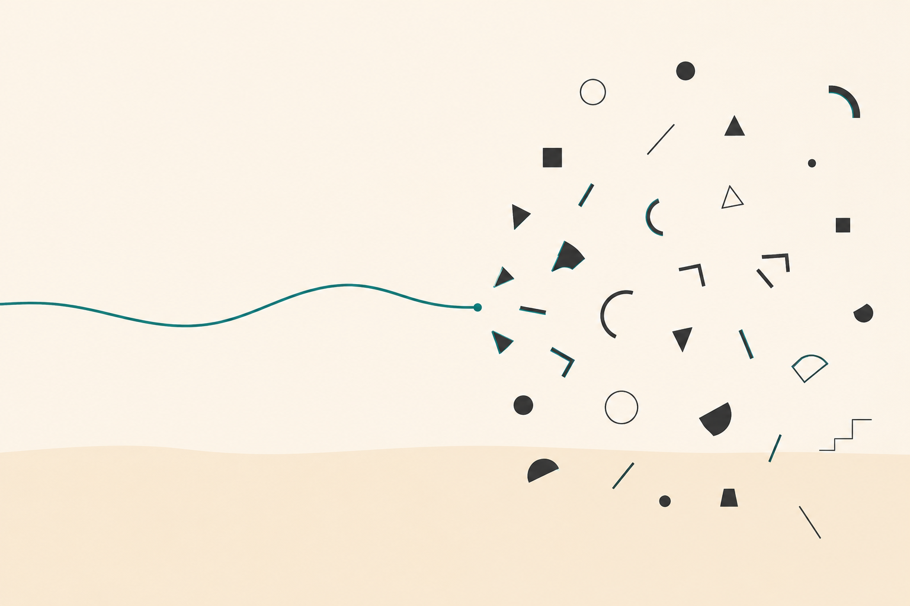

Insights • On Expertise
We're Going to Talk One Day
Aaron C. Smith — July 2026

Maybe you've seen the station renders, or a reference-concept page, or a rover post, and you've got questions. Sharp ones.
How do you know three rings is stable? What's your radiation number? Who's validated the seismic method — and on what?
Good. Keep them coming — you're exactly who this is for.
Here's the honest answer: ask me why the architecture is shaped the way it is — why rings, why lunar water, why this sequence — and I'll go as long as you'll sit there. That's my field, and every choice on this site has a rationale you can pull on. But push any domain deep enough — the fatigue life of a coupling, the coda in a scattering regolith, the failure modes of a thermal loop — and you'll hit the point where the right answer is a name, not a claim. Nobody builds a space station out of one head, and I'm not pretending to.
That's not a weakness in the plan. That is the plan. Every capability here is written as a requirement, not a finished design, because someone who's spent a career on that thing will design it better than I would — and some of them are already at the table, quizzing me for fifty minutes past the meeting, which is how I know it's working.
So if you're reading a page here and thinking he hasn't accounted for X — maybe I have, at the level that sets the requirement. Ask. And if I haven't? That's not a gotcha. That's an opening.
We're going to talk one day.
The program in full: Program Architecture & Technical Domains